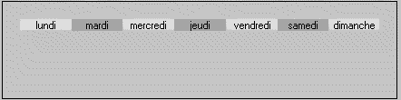
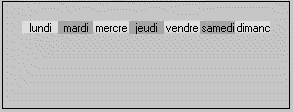
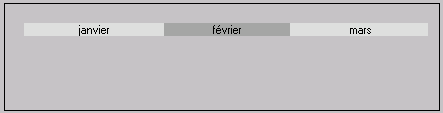
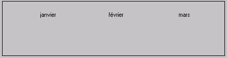
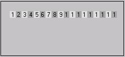
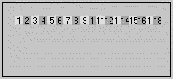

Les commandes d'ajustement de textes permettent d'afficher plusieurs textes et de les répartir sur la largeur de l'objet graphique.
<a>texte;texte;texte...
Ajustement régulier de textes.
Les différents textes sont séparés par un point-virgule. Ils sont répartis de manière uniforme sur toute la largeur de l'objet. En cas de débordement, les textes sont tronqués.
La couleur de fond des différents textes est alternée de façon automatique.
Exemple
ff.graph = "<a>lundi;mardi;mercredi;jeudi;vendredi;samedi;dimanche"

Remarque
Si l'objet graphique n'est pas assez large pour contenir l'ensemble du texte, tous les éléments tronqués contiendront alors le même nombre de caractères. Voir la commande <a0>.

<a>texte,nnn;texte,nnn;texte,nnn...
Ajustement de textes en spécifiant les proportions, chaque texte étant suivi d'une valeur indiquant sa proportion.
Le pourcentage occupé par chaque texte est obtenu en faisant le calcul :
(nnn * 100) / Somme(nnn)
La couleur de fond des différents textes est alternée de façon automatique.
Exemple
Pour réaliser un graphique avec les mois, il faut préciser la longueur de chaque mois.
ff.graph = "<a>janvier,31;février,28;mars,31"

<aa>texte;texte;texte...
<aa>texte,nnn;texte,nnn;texte,nnn...
Identique à la commande <a> avec comme seule différence, le fait que la couleur de fond ne change jamais.
Exemple
ff.graph = "<aa>janvier,31;février,28;mars,31"

<a0>texte;texte;texte...
<a0>texte,nnn;texte,nnn;texte,nnn...
<aa0>texte,nnn;texte,nnn;texte,nnn...
Identique aux commandes <a> et <aa> avec comme seule différence, le fait que
s'il doit y avoir troncature de certains éléments, les éléments tronqués sont affichés de telle manière qu'un maximum de caractères soient affichés dans chacun des éléments.
La commande <a> tronque tous les éléments trop grands au même nombre de caractères.
Exemple
Avec la commande <a>
ff.graph = "<a>1;2;3;4;5;6;7;8;9;10;11;12;13;14;15;16;17;18"

Avec la commande <a0>
ff.graph = "<a0>1;2;3;4;5;6;7;8;9;10;11;12;13;14;15;16;17;18"

Remarque :
Toutes ces commandes sont automatiquement suivies d'un retour à ligne.
Couleurs de fond